İlk 30 hafta playtesti
B2B, ERP, kurucu tek başına. Yeni bir koşu menüden açıldı ve oyuncu gibi oynandı: sprint planı, işe alım, satış
görüşmeleri, gelen her kâğıda düşünülerek cevap. Build b2639465, dizüstü, Godot MCP ile. 30. haftaya 66 dakikada
varıldı. Aşağıdaki bulgular ayrıca kodda doğrulandı: hata kodun ya da ekrandaki metnin kendi
söylediğini yapmadığı yer, tasarım kodun bilerek yaptığı ama oyuncunun takıldığı yer.
[GÖRÜŞ] oynayanın izlenimi.
Erdem'in bilmesi gerekenler
-
hataÇeyrek bülteni cevaplanamadı
H14'te geldi. H15'te "Bu hafta son" yazan ve Cevapla'sı açık kâğıda basınca "Bu kâğıdın konusu kalmadı" çıktı, kâğıt silindi ve koşu boyunca bir daha gelmez. Kartın koşulu yalnız çeyreğin ilk haftasında doğru, ömrü 2 hafta; açarken koşul yeniden okunuyor.
quarterly_bulletin.json:43-45, :85·engine.gd:766-780·mail_pane.gd:540-542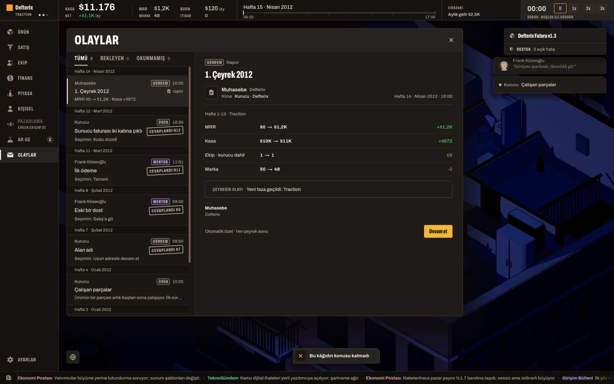
H15: bildirim altta, bülten listede yok. -
tasarımH19–H25 sprintleri neredeyse boş koştu
Hız 11/36, 9/36, 10/38. Hatların sonraki kademeleri kapanınca sprint listesinde yalnız görüşme ve düzeltme kalıyor; yeni kart Ar-Ge'den açılıyor ama plan ekranı Ar-Ge'yi göstermiyor (KR7: kilitler sprint ekranında görünmez). Ar-Ge'nin "1" rozeti H7'den H25'e durdu; maaşı ödenen geliştirici yedi hafta çoğunlukla boştu.
product_model.gd:243· [GÖRÜŞ] Oyunun en uzun "beklemek" hissi buradan geldi.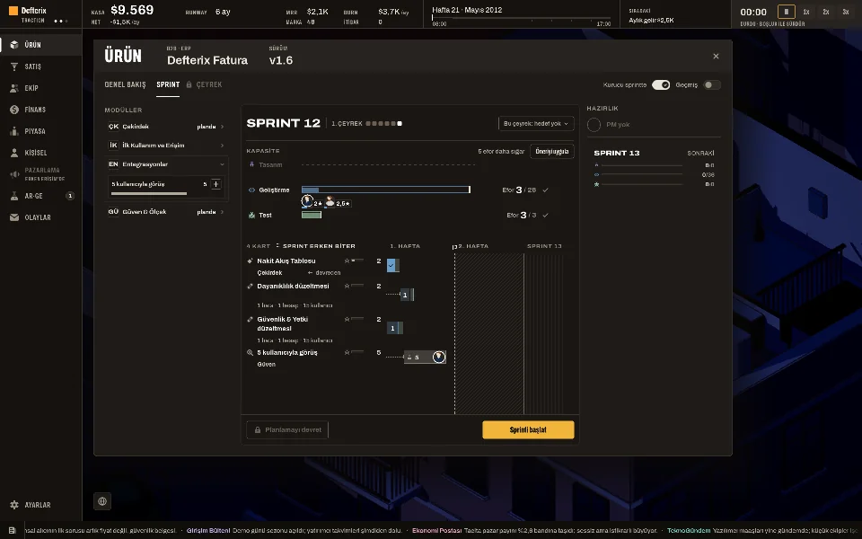
H21: Sprint 12, kapasite boş. -
veriKâğıtlar arası sessizlik ve kimden geldikleri
İlk 5 hafta karar yok; gerçek seçimli kâğıtlar arasındaki en uzun ara H22→H29 (7 hafta). Sessiz havuz uyarısı 11 kez geldi, art arda boş dönüş 13'e çıktı ve sayaç hiç sıfırlanmadı. İlk 12 haftanın 8 kartının 8'i Kurucu ya da Frank'ten; müşteri ve çalışan sesi H16'dan sonra başlıyor. Ayrıntı aşağıda.
engine.gd:397-404(sessiz havuz, §13.6) -
tasarımArda'nın sprint kâğıdı görülmeden doldu
product.sprint_dev_backfillH29 09:00'da masaya geldi, sprintin kapandığı H30 00:00'da süresi doldu ve bedeli (1 hata) indi. Oyuncu kâğıdı görmedi; yalnız haber bandında "Cevap gelmedi, eski kayıtlar boş kaldı" geçti. Bütün sprint kâğıtları bir haftalık ve bir haftalık kâğıda son uyarı yok.sprint_dev_backfill.json:121-128·papers.gd:85-86 -
hata"Zor modda açılır" sözü tutmuyor
Frank'in teklifinde "Reddet" kilitli ve "Zor modda açılır" diyor. Kilidin okuduğu bayrağı yazan kod yok; onboarding'deki Zor yalnız başlangıç kasasını değiştiriyor, Zor seçilse de Reddet açılmaz. Frank'in üç "Karar" kartının üçü de tek seçilebilir şıklı (tasarım).
seams_ported.gd:105-107·game_state.gd:116-117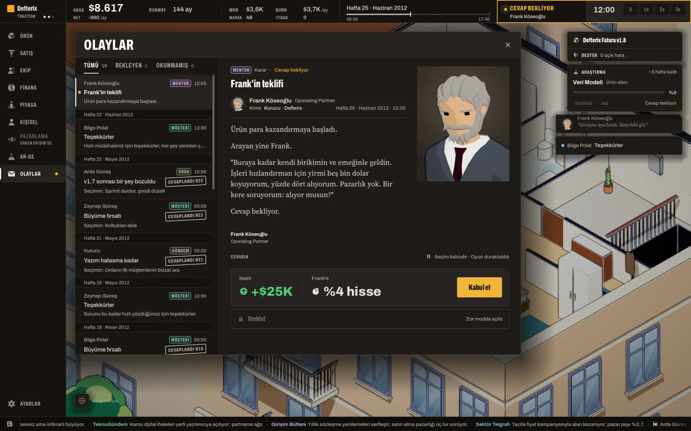
H25: Frank'in teklifi. -
hataSatış ekranında iki tutarsızlık
Haftanın başında 00:00–07:59 arası satış paneli "Mesai bitiyor. Bu hafta yeni bir masaya oturulmaz." diyor ve görüşmeyi kapatıyor; gece ile mesai sonu aynı anahtara düşüyor. Müşteri kartı "Müşteri temsilcisi: atanmadı" yazarken atama listesi "Kurucu … zaten sorumlu" diyor; ikisi aynı durumu farklı adlandırıyor.
sales_ledger.gd:327-328·work_hours_system.gd:57-59·sales_tab.gd:661-666 -
hata"…" ile kesilen metin
Üst barın SIRADAKİ yuvası "Çeyrek bülteni: i… · bu hafta son" (sabit 208 px yuva); Ekip > Kadro'nun Görev sütunu "Defterix Fatura v1.9 üzer…". 28 Ekim kuralına ("hiçbir metin … ile kesilmez") aykırı.
top_bar.gd_fit_next·hr_ledger._text(clip_text,OVERRUN_TRIM_ELLIPSIS)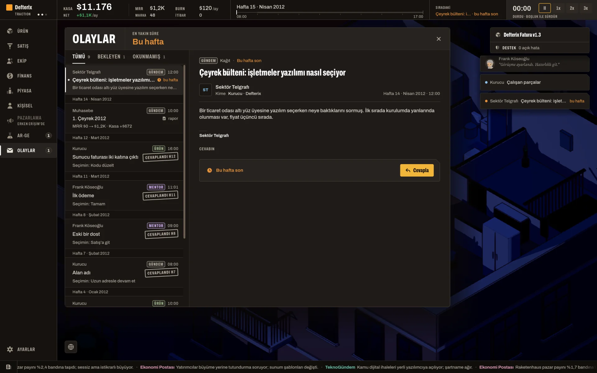
H15: SIRADAKİ satırı kesik. -
tasarımYeni işe alınan hemen izne çıkıyor
Arda H18'de alındı, H23'te; Selin H27'de alındı, H28'de iki haftalık yaz iznine çıktı. Kart yok, yalnız haber bandı. İzin haftası işe alım sırasından türüyor, yeni gelene muafiyet yok.
hr_constants.gd:1089-1090·character_registry.gd:445-447
[GÖRÜŞ] En iyi okunan kâğıtlar H30'un iki müşteri kâğıdıydı ("Sahibi değişti", "Muhasebecileri"): üç şıkkın üçü gerçek ödünleşim, Türkçeleri doğal, çipler oyunda birebir indi.
Kâğıtlar hafta hafta
seçimli kâğıt gelditek şıklı "Karar"gelen kâğıt cevaplanamadı (H14 bülten; H29'da gelen sprint kâğıdı da görülmedi)
Gönderenler (14 karar kartı): Kurucu 3 (H6, 12, 20) · Frank 3 (H8, 11, 25) · Sektör Telgrafı 1 (H14) · Zeynep Güneş 2 (H16, 22) · Bilge Polat 2 (H18, 29) · Arda Güneş 2 (H22, 29) · Destek 1 (H30). H22'de iki kâğıt aynı hafta geldi.
| H | Kart | Gönderen | Seçim | Neden (oyuncu) |
|---|---|---|---|---|
| 7 | founder.domain_name | Kurucu | Uzun adresle devam et | Kasa $10K, gelir 0; kısa adres $900'a değmez |
| 8 | customer.frank_intro | Frank | Satışa git (tek şık) | |
| 11 | funding.gate_traction | Frank | Traction'a geç (tek şık) | |
| 12 | product.sprint_solo_server_bill | Kurucu | Kodu düzelt | Tek başına kapasite nakitten değerli |
| 15 | world.quarterly_bulletin | Sektör Telgrafı | düştü | Madde 1 |
| 16 | product.incident_regression | Zeynep Güneş | Kendin düzelt | Sızıntı yeni müşteride; "sprinti durdur"un bedeli yazmıyor |
| 18 | customer.expansion | Bilge Polat | Koltukları ekle | Bedelsiz gelir |
| 21 | rival.copycat | Kurucu | Onların ilk müşterilerini ara | $3K ihtarname runway'i ~2 ay kısaltır |
| 22 | customer.expansion | Zeynep Güneş | Koltukları ekle | Aynı kâğıt, aynı cevap |
| 22 | product.incident_regression | Arda Güneş | Sprinti durdur, şimdi düzelt | Sprint neredeyse boş, durmanın kaybı küçük |
| 25 | funding.frank_cheque | Frank | Kabul (Reddet kilitli) | Madde 5 |
| 30 | product.sprint_dev_backfill | Arda Güneş | süresi doldu, görülmedi | Madde 4 |
| 30 | customer.new_owner | Bilge Polat | Avukat parasını fiyata yansıt | $2,5K tek sefer, +$400/ay ile ~6 ayda döner |
| 30 | customer.chargeback | Destek | Bırak, para onda kalsın | $1,8K tek sefer; öbür şıklar daha pahalı ya da churn riski |
Hafta, kaydın olay geçmişindeki gündür (cevaplandığı hafta). Notlar ve teşekkür kartları tabloda yok.
Takılınan başka yerler
- tasarım"İmzalarsanız … sonraki sprintimize yazarım" sonraki sprint boşken "Bir sonraki sprintte buna yer yok" ile kilitliydi: istenen kademenin tam eforu (15/25/40) tek kurucunun boş puanını aşıyor.
sales_meeting_system.gd:391-394 - tasarım"Ürün kolay öğreniliyor" H13 ve H16'da açık, H22 ve H24'te kapalıydı: kilit ürüne değil masadaki adaya bağlı.
sales_probes.gd:63-64 - tasarımTeklifteki "Kapasite 79/50" sunucu doluluğu; aşımda ton ya da uyarı yok.
negotiation_system.gd:263-267 - tasarımSığmayan kartın "+"ı kapalı, nedeni yalnız ipucunda; ekranda "2 efor daha sığar" yazarken 25'lik kart eklenemiyor.
area_panel.gd:274-286 - tasarımH12'de cevapsız kâğıdın kartı iki "DEVREDEN" satırı ve Test "5/0" olarak göründü: kâğıt beklerken karta kimse atanmıyor.
sprint_system.gd:1361 - tasarım"Sprinti durdur"un bedel çipi yok: sprintte yer varken kayan kart olmuyor, çip yalnız kayan kart varsa çıkıyor.
chips.gd:25-26 - tasarımKâğıt açıkken "Cevap bekliyor" serif görünüyor: yedek font değil, varyasyonu serif tanımlı.
office_hud.gd:51 - tasarımQ1 raporu "Kasa $10K → $11K (+$672)": uçlar bine yuvarlanıyor, fark tam yazılıyor. [GÖRÜŞ] Okurken çelişkili duruyor.
- "Sprinti başlat", "Cevapla" ve sol menü bazen ilk tıklamaya tepki vermedi; kodda çift giriş isteyen yol yok, MCP'nin tıklamasından olabilir (belirsiz).
- Faz adları "BOOTSTRAP", "TRACTION" ve Frank'in unvanı "Operating Partner" İngilizce. Ham anahtar görülmedi.
Kareler
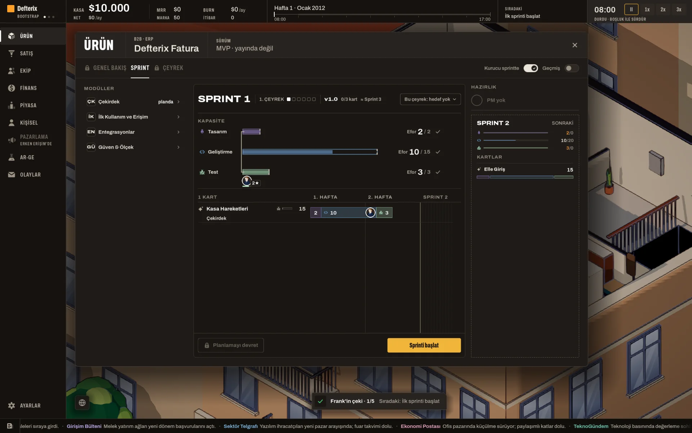
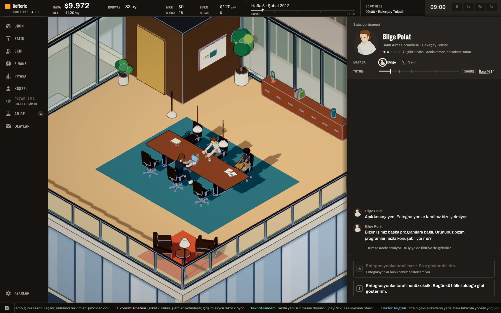
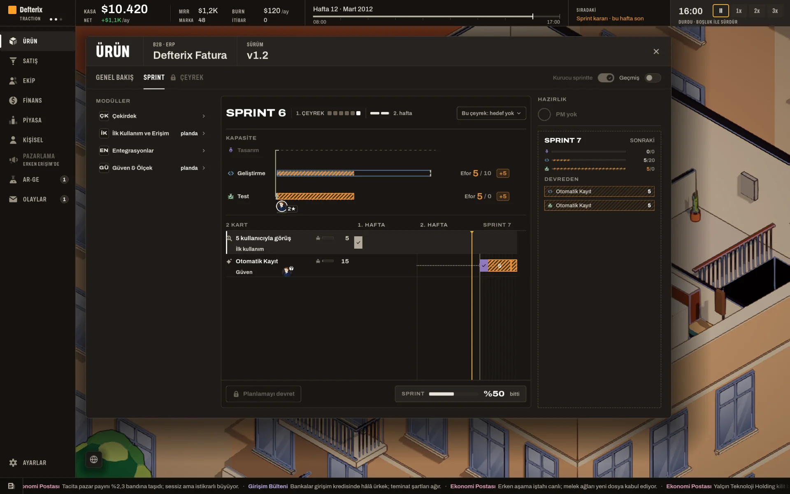
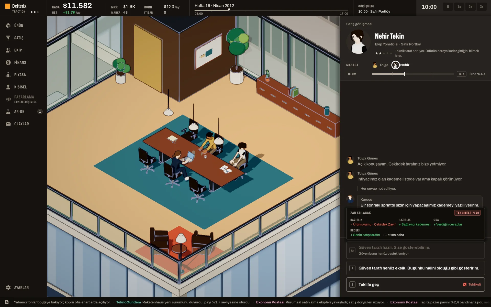
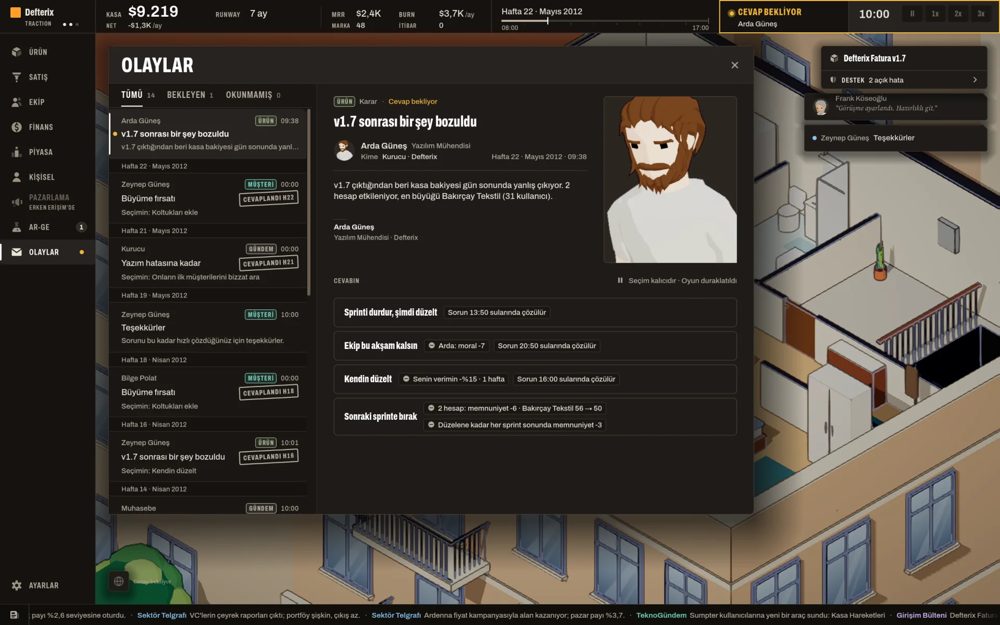
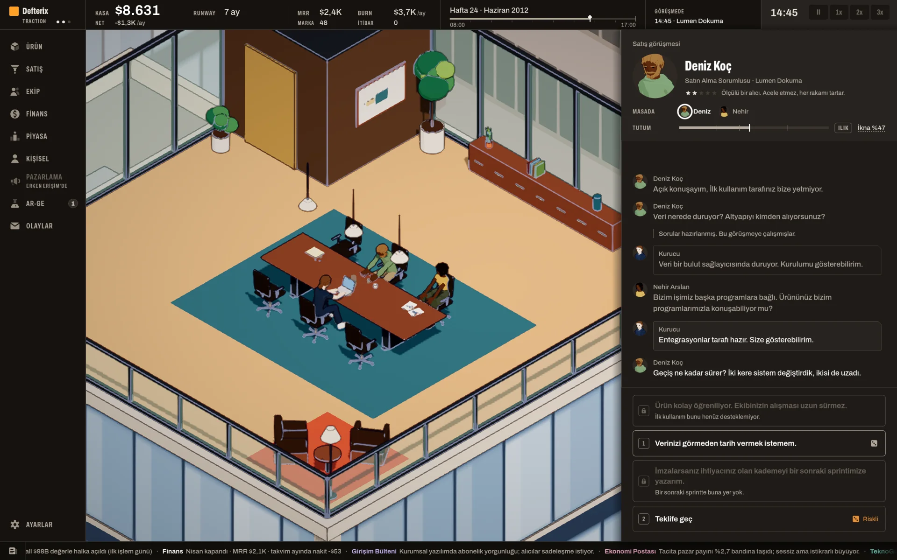
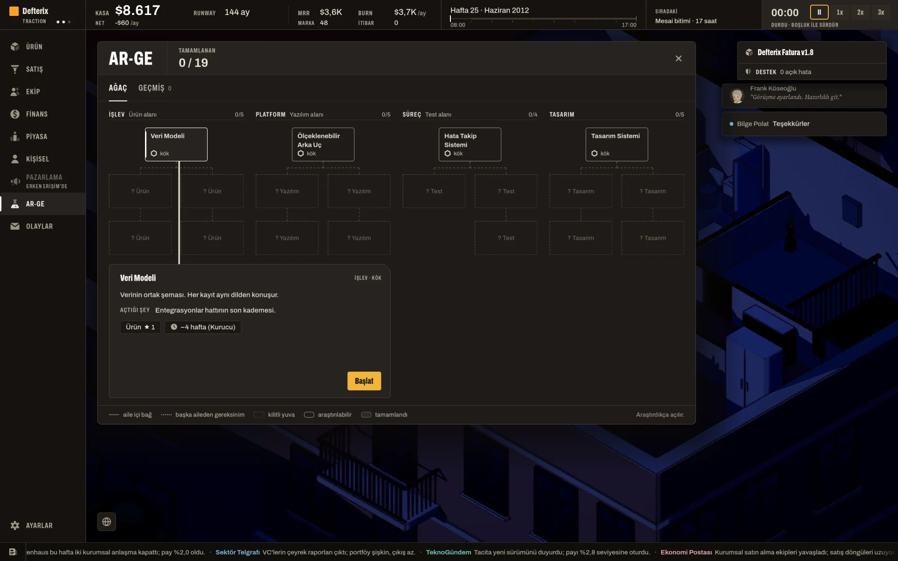
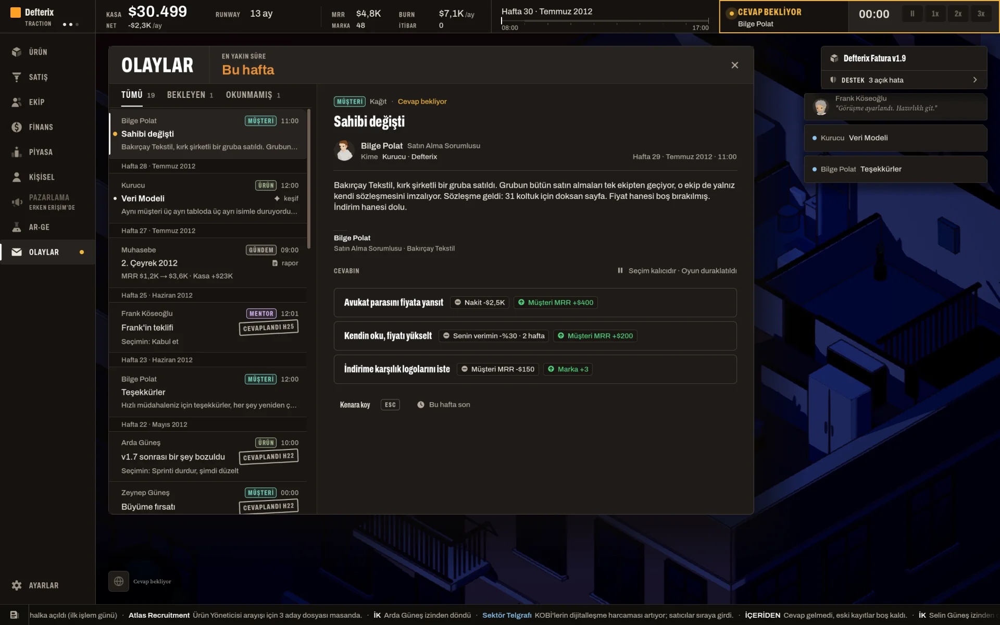
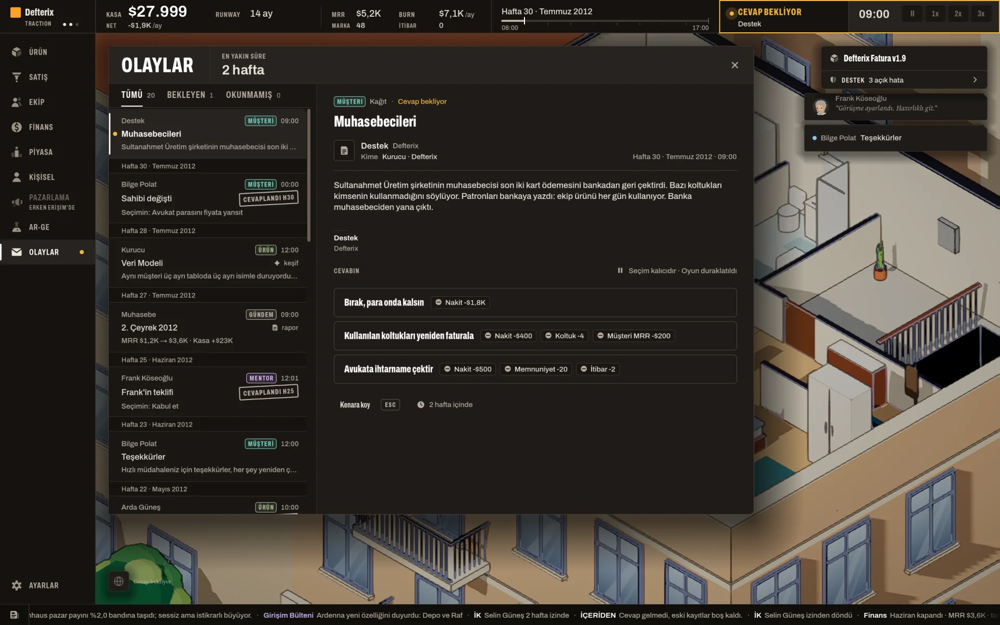
Tam notlar (her kartın şıkları, çipleri ve Türkçe notu), kod doğrulaması ve H30 kaydı repoda:
docs/tasks/dizustu/raporlar/playtest_2026-10-28/ (RAPOR.md, notlar.md, dogrulama.json; H30 kaydı kayboldu). Kareler 1920×1200, oyunun bu ekrandaki pencereli varsayılanı.